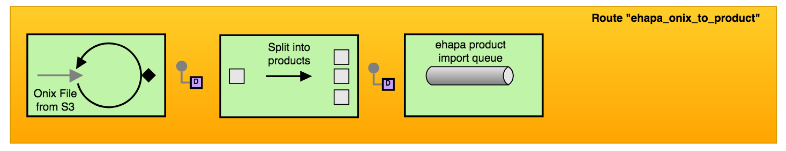
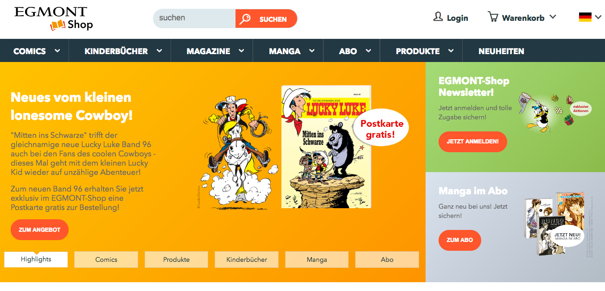

Anbindung eines weiteren CRM Systems an ein Magento-basiertes Online-Shopsystem
Das bestehende CRM als Blueprint
(Micro) Services vs. Monolith?
PHP?
Best Practices / Tools?
"Enterprise application integration (EAI) is the use of technologies and services across an enterprise to enable the integration of software applications and hardware systems."
"Integrationsbibel" von Gregor Hohpe and Bobby Woolf
dokumentieren 65 Integrationspattern
Onix File in einzelne Produkte aufteilen
Über 200 Components / Integrations
AHC AHC-WS AMQP APNS Atmosphere-Websocket Atom Avro AWS-CW AWS-DDB AWS-DDBSTREAM AWS-EC2 AWS-SDB AWS-SES AWS-SNS AWS-SQS AWS-SWF AWS-S3 Bean Beanstalk Bean Validator Box BraintreeBrowse Cache Cassandra Class Chronicle Engine Chunk CMIS Cometd Consul Context ControlBus CouchDB Crypto (Digital Signatures) CXF CXF Bean CXFRS DataFormat DataSet Direct Direct-VM DNS Disruptor Docker Dozer Dropbox EJB Ehcache ElasticSearch Etcd Spring Event EventAdmin Exec Facebook File Flatpack Flink FOP FreeMarker FTP FTPS Ganglia Gauth GHttp Git Github Glogin Gtask Google Calendar Google Drive Google Mail Gmail Gora Grape Geocoder Google Guava EventBus Hazelcast Hbase HDFS HDFS2 Hipchat HL7 Infinispan HTTP HTTP4 iBATIS Ignite IMAP IMAPS IRC IronMQ JavaSpace jBPM jcache jcloudsJCR JDBC Jetty Jgroups JIRA JMS JMX JPA JOLT Jsch JT/400 Kafka Kestrel Krati Kubernetes Kura Language LDAP LinkedIn Log Lucene Lumberjack Metrics MINA MINA2 Mock MLLP MongoDB MongoDB GridFS MQTT MSV Mustache MVEL MyBatis Nagios NATS Netty Netty4 Netty HTTP Netty4 HTTP Olingo2 Openshift OptaPlanner Paho Pax-Logging PDF POP3 POP3S PrinterProperties Quartz Quartz2 Quickfix RabbitMQ Ref Rest Restlet REST Swagger RMI RNC RNG Routebox RSS Salesforce SAP NetWeaver Scheduler schematron SEDA ServiceNow SERVLET SFTP Sip SIPS SJMS SJMS Batch Slack SMTP SMPP SMPPS SNMP Solr Apache Spark Spark-rest Splunk SpringBatch SpringIntegration Spring LDAP Spring Redis Spring Web Services SQL SQL Stored Procedure SSH component StAX Stream Stomp StringTemplate Stub Telegram Test Timer Twitter Undertow Validation Velocity Vertx VM Weather Websocket XML Security XMPP Xquery XSLT Yammer Zookeeper
AHC AHC-WS AMQP APNS Atmosphere-Websocket Atom Avro AWS-CW AWS-DDB AWS-DDBSTREAM AWS-EC2 AWS-SDB AWS-SES AWS-SNS AWS-SQS AWS-SWF AWS-S3 Bean Beanstalk Bean Validator Box BraintreeBrowse Cache Cassandra Class Chronicle Engine Chunk CMIS Cometd Consul Context ControlBus CouchDB Crypto (Digital Signatures) CXF CXF Bean CXFRS DataFormat DataSet Direct Direct-VM DNS Disruptor Docker Dozer Dropbox EJB Ehcache ElasticSearch Etcd Spring Event EventAdmin Exec Facebook File Flatpack Flink FOP FreeMarker FTP FTPS Ganglia Gauth GHttp Git Github Glogin Gtask Google Calendar Google Drive Google Mail Gmail Gora Grape Geocoder Google Guava EventBus Hazelcast Hbase HDFS HDFS2 Hipchat HL7 Infinispan HTTP HTTP4 iBATIS Ignite IMAP IMAPS IRC IronMQ JavaSpace jBPM jcache jcloudsJCR JDBC Jetty Jgroups JIRA JMS JMX JPA JOLT Jsch JT/400 Kafka Kestrel Krati Kubernetes Kura Language LDAP LinkedIn Log Lucene Lumberjack Metrics MINA MINA2 Mock MLLP MongoDB MongoDB GridFS MQTT MSV Mustache MVEL MyBatis Nagios NATS Netty Netty4 Netty HTTP Netty4 HTTP Olingo2 Openshift OptaPlanner Paho Pax-Logging PDF POP3 POP3S PrinterProperties Quartz Quartz2 Quickfix RabbitMQ Ref Rest Restlet REST Swagger RMI RNC RNG Routebox RSS Salesforce SAP NetWeaver Scheduler schematron SEDA ServiceNow SERVLET SFTP Sip SIPS SJMS SJMS Batch Slack SMTP SMPP SMPPS SNMP Solr Apache Spark Spark-rest Splunk SpringBatch SpringIntegration Spring LDAP Spring Redis Spring Web Services SQL SQL Stored Procedure SSH component StAX Stream Stomp StringTemplate Stub Telegram Test Timer Twitter Undertow Validation Velocity Vertx VM Weather Websocket XML Security XMPP Xquery XSLT Yammer Zookeeper
Finde Twitter Tweets mit dem Hashtag #gujtechtalk und generiere mit dem neuesten Tweet eine HTML Seite die via Amazon-S3 CDN ausgeliefert wird.
ProducerTemplate template = exchange.getContext().createProducerTemplate();
// you can cast the response directly
String ret = template.requestBody("

Produktimport für https://www.egmont-shop.de